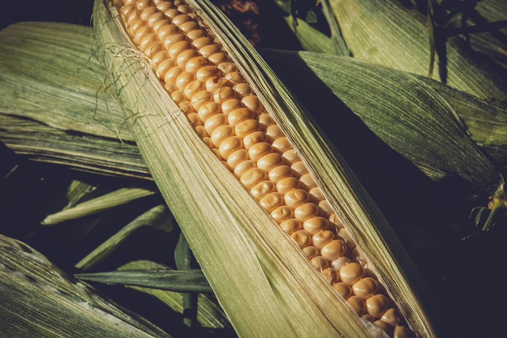
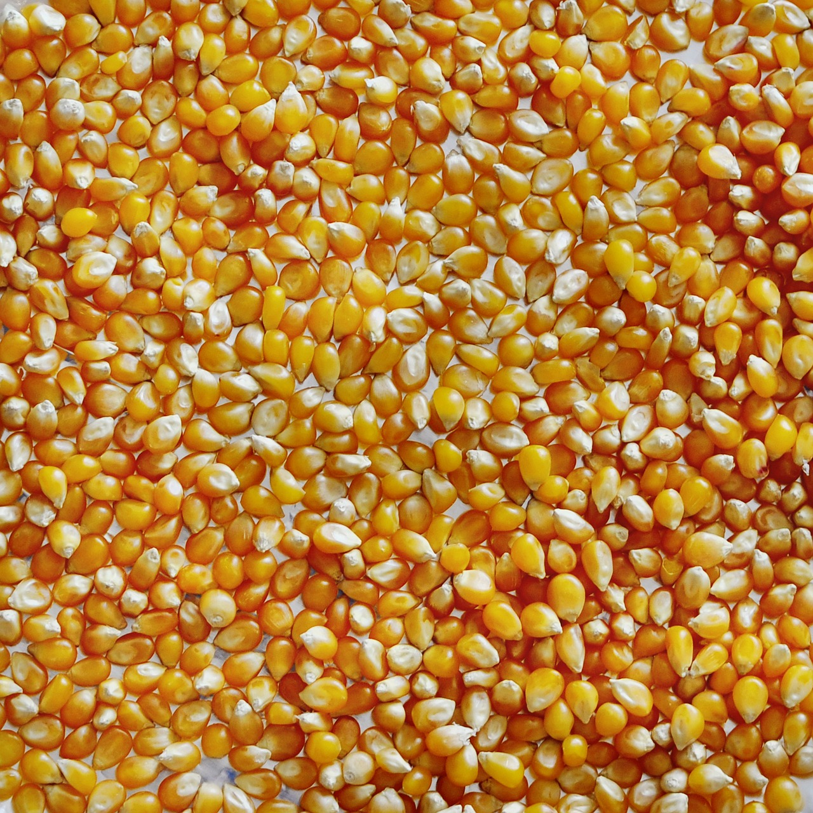

Sobre o Agrinho
Ele tem muita vitamina A, componente que faz bem para a pele e visão,
além de favorecer a imunidade e contribuir para a prevenção de doenças.
O alimento também oferece boas quantidades de vitaminas B1 e B3, assim como de minerais —
como cálcio, ferro, fósforo, magnésio e potássio.
Desafios

O milho verde pode ser considerado uma hortaliça,
em virtude do tempo de sua permanência no campo até o momento da colheita,
que é de aproximadamente 90 dias no verão e de 100 dias no inverno..
Contribuição

A colheita de milho pode ser feita de forma manual ou mecanizada. A colheita manual de milho é empregada em pequenas propriedades.
Ela tem baixo rendimento e demanda muita mão de obra.
Afinal, é feita sem o suporte de máquinas agrícolas
Relogio do kkk
Tempo restante kkk
7
dias
7
horas
7
min
7
seg